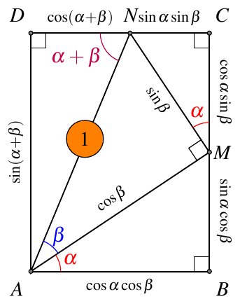
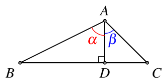
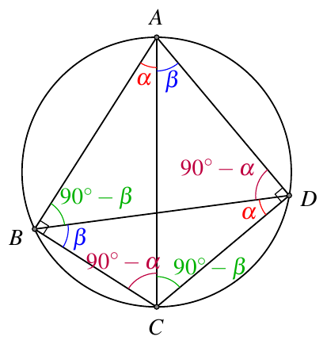
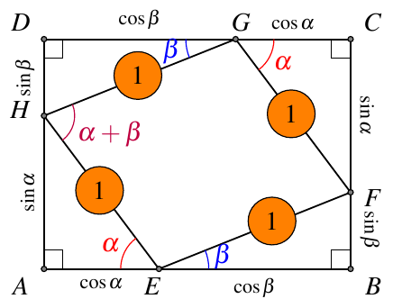
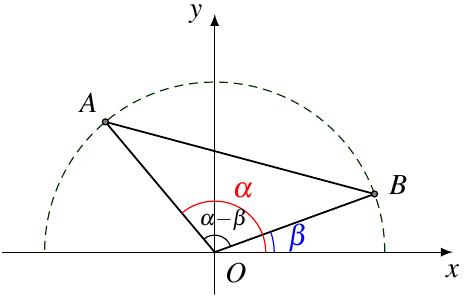
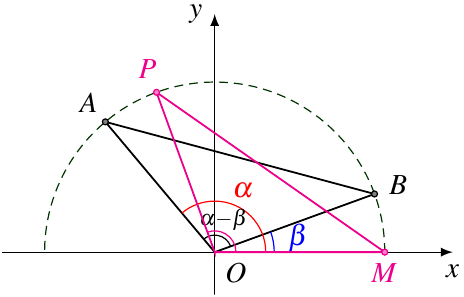

两角和差的正余弦公式，是整个三角恒等变形的基础，其它的恒等变形的公式，都是由这几个公式推导得到．因此，如何证明第一个公式，是一个很重要的问题．
这里我们整理几种常见证明方法．
1. 几何方法
几何方法的好处是与初中锐角三角函数的内容联系紧密，但是缺点只对锐角（甚至是两角和为锐角）的情况成立，而且不好推广．
1.1. 矩形
如图1，

由矩形的对边相等可得
sin(α+β)cos(α+β)=sinαcosβ+cosαsinβ=cosαcosβ−sinαsinβ
1.2. 面积法
在 △ABC 中，AD⊥BC 于 D， ∠BAD=α，∠CAD=β，如图2，

有
S△ABC=S△ABD+S△ACD
即
21AB⋅ACsin(α+β)=21AB⋅ADsinα+21AC⋅ADsinβ
于是
sin(α+β)=ACAD⋅sinα+ABAD⋅sinβ=cosβsinα+cosαsinβ
另外，也可以直接由张角定理得到同样的形式．
1.3. 正弦定理
在上面的图2中，根据正弦定理，有
BCsin∠BAC=ACsinB=ABsinC
即
BCsin(α+β)=ACsin(90∘−α)=ABsin(90∘−β)=ACcosα=ABcosβ
注意
BC=BD+DC=ABsinα+ACsinβ
又有
BCsin(α+β)=ABsinα+ACsinβcosβsinα+cosαsinβ
于是有
sin(α+β)=cosβsinα+cosαsinβ
1.4. 托勒密定理
在半径为 R 的圆的一个内接四边形 ABCD 中，∠ABC=∠ADC=90∘，如图3，

根据托勒密定理，有
AB⋅CD+AD⋅BC=AC⋅BD
结合正弦定理可得
2Rsin(90∘−α)⋅2Rsinβ+2Rsin(90∘−β)⋅2Rsinα=2Rsin90∘⋅2Rsin(α+β)
化简得
cosαsinβ+cosβsinα=sin(α+β)
1.5. 弦图
我们可以用弦图来证明勾股定理．在原始的弦图中，四个小三角形是全等的．我们可以对它做一下变形，把四个全等的三角形改成两组全等的三角形，这样形成的弦图就不是两个正方形了，而是矩形和菱形．
1.5.1. 外弦图

如图4，计算面积可得
2⋅21sinα⋅cosα+2⋅21sinβ⋅cosβ+1⋅1⋅sin(α+β)=(sinα+sinβ)(cosα+cosβ)
化简即可得到两角和的正弦公式．
1.5.2. 内弦图

如图5，计算面积可得
2⋅21sinα⋅cosα+2⋅21sinβ⋅cosβ+(sinβ−sinα)(cosα−cosβ)=1⋅1⋅sin(α+β)
化简即可得到两角和的正弦公式．
2. 坐标方法
坐标方法的好处是容易推广到一般角．
2.1. 距离公式+余弦定理
如图6，在平面直角坐标系 xOy 中，角 α 和角 β 的终边分别与单位圆交于点 A(cosα,sinα)、B(cosβ,sinβ)，则 ∠AOB=α−β，

根据距离公式，
∣AB∣2=(cosα−cosβ)2+(sinα−sinβ)2=2−2(cosαcosβ+sinαsinβ)
根据余弦定理，
∣AB∣2=∣OA∣2+∣OB∣2−2∣OA∣⋅∣OB∣cos(α−β)=2−2cos(α−β)
于是有
cos(α−β)=cosαcosβ+sinαsinβ
2.2. 距离公式+全等
如图7，我们把上图中的 △OBA 旋转到 △OMP，则 △OBA≅△OMP，

因此 ∠MOP=∠BOA=α−β，P 点的坐标为 (cos(α−β),sin(α−β))，所以
∣AB∣2=∣PM∣2=(cos(α−β)−1)2+sin2(α−β)=2−2cos(α−β)
得到了上一种方法同样的式子．
3. 向量方法
在平面直角坐标系 xOy 中，角 α 和角 β 的终边分别与单位圆交于点 A(cosα,sinα)、B(cosβ,sinβ)，则 ∠AOB 等于 β−α 或 α−β，或者和其中一个相差 2kπ．因此
cos(α−β)=cos∠AOB=OA⋅OBOA⋅OB=OA⋅OB=(cosα,sinα)⋅(cosβ,sinβ)=cosαcosβ+sinαsinβ
我们看到，向量法的好处是不需要讨论 α 和 β 的情况，而且证明的过程非常简洁．
4. 复数方法
利用复数的指数形式和欧拉公式也可以很容易推出和角公式：
cos(α+β)+isin(α+β)=ei(α+β)=eiαeiβ=(cosα+isinα)(cosβ+isinβ)=(cosαcosβ−sinαsinβ)+i(sinαcosβ+cosαsinβ)
对比两边的实部和虚部就可以得到两角和的正弦和余弦公式．
参考资料：
- 两角和与差的余弦公式的五种推导方法之对比
- HPM视角下的两角和与差的余弦公式教学，数学教学2019年第3期
- Wikipedia: List of trigonometric identities
- MathWorld: Trigonometric Addition Formulas